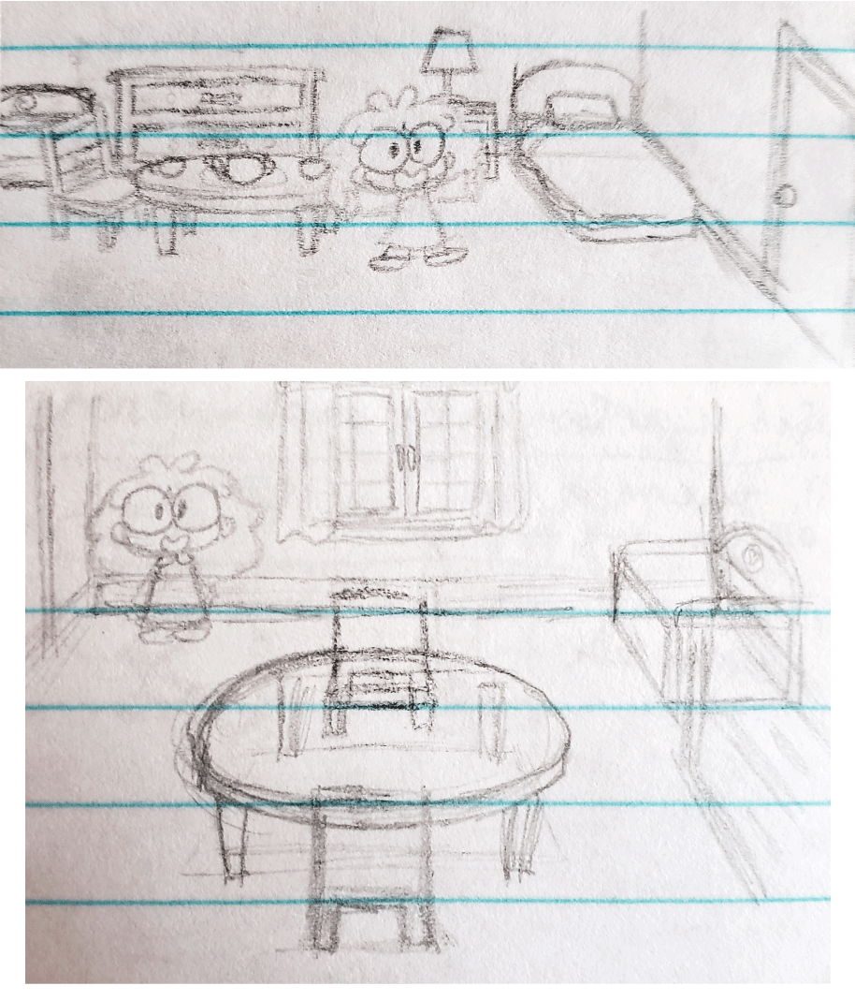

Here & Away

Here & Away is a short musical graphic novel about a girl who tries to wish herself away from here by writing a letter to a personification of destiny. The graphic novel is displayed on a webpage where there are buttons that allow the user to play the songs and follow along with the lyrics.
This was created as a Senior Project for the Integrated Digital Media program at NYU in the Spring 2021 semester. It was part of the IDM 2021 Spring Showcase and can be viewed here.
Character Design
Olive
When thinking about what to name the main character, I thought about how she was a human, a living being, and someone that was existing. Life is one of the themes for my project, and so I thought of naming her Liv, but that seemed a bit too obvious. Then I thought, “Well, what Liv short for? It’s short for Olivia.” Then I thought about the name Olive, which kind of sounded like “I’ll live,” and I realized that I had found a good name for the main character. It wasn’t as obvious as Liv, and there was still a hidden meaning to it.
There wasn’t much reason behind Olive’s design other than wanting to make her feel child-like. The main inspirations I had in mind when doodling potential designs were Mabel, Tilly, and Anne from the Disney animated shows Gravity Falls, Big City Greens, and Amphibia, respectively. Specifically, it was Mabel’s purple night shirt, Tilly’s dress, and Anne’s hair that helped influence some of the sketches.
Destiny
When brainstorming about how the personification of destiny should look like, I used fortune teller outfits, tea party outfits, and Rosalina from the game Super Mario Galaxy as potential references. Because destiny is about the future, I felt that the character could be an older-sister-type figure to Olive.
Stuffed Animals/Beary
I originally planned to have several stuffed animals, but while writing the story, I found it difficult trying to make each one feel like their own character. During a meeting with Carla, my senior project professor, she pointed out that having all these stuffed animals might be too much, which helped me realize that the only reason I kept trying to include them was that they were in my first ideas for the project. I had thought up specific scenes for them, such as shutting the monsters back into the closet, but trying to hold onto these ideas was only holding me back from progressing in the project.
Once I decided that I only really needed one stuffed animal to act as Olive’s inner voice, I chose to make it a teddy bear. Early on, I had a bunny as the main stuffed animal, but I decided to change it to a bear, not only because it’s a common stuffed animal, but also because—terrible pun incoming—this character is trying to help Olive “bear” with the pain she’s experiencing.
Monsters
I didn’t really have any references in mind as I was doodling potential monster designs, but some of the sketches reminded me of the Pokémon Haunter, which helped influence the final design.
Background Design
When I first came up with the project idea, I envisioned Olive’s room to be something like Boo’s room from the movie Monsters Inc., a dark room with light coming in from the window to the left. I thought of it as a metaphorical reimagining of someone’s mind, similar to how the movie Inside Out portrayed Riley’s mind. The table for the tea party would be in the middle of the room. The window would be what the person’s eyes would be seeing. I imagined the bed and the closet door on the wall opposite to the window. As for other furniture, I considered splitting the room into “left brain” and “right brain,” which led me to add a toy box on the right and a bookshelf on the left.

After removing the tea party from the story, I needed to redesign Olive’s room a bit since she didn’t need a table in the middle of the room anymore. I gave her a desk right next to the toy box and thought about adding drawings on the wall and the desk as a way to show her transition from being happy to sad. The bright, cheerful drawings would be seen on the wall, while the gloomy, scribbly ones would be on her desk. The drawings never appeared in the final version, but these ideas helped me design the final version of her room.
Early Story Development
Animation takes a long time, and knowing that, I went into the project focused on getting the pre-production elements, such as the script and storyboard, done as quickly as possible so that I could have time to animate everything. Using the rough outline for the plot, I started drafting the first script, trying to be both comedic and dramatic with the dialogue and action.
Early Storyboard Sketches

The first draft never got finished, as I wasn’t sure about how the story was turning out. Reading through it in my head, it seemed like there were a lot of filler details that weren’t too important to the story, and so I wanted to make a bit shorter. I also had to rework the story after deciding to have one stuffed animal character instead of several. In addition, I felt like I was trying too hard to make things “funny” when this was a serious topic I was talking about.
Doing more research into suicide reminded me of how many kids deal with these kinds of thoughts. I was shocked to find out that there were some people purposely hiding suicide tips within what appears to be children’s videos in order to teach kids how to hurt themselves. I wanted my project to be family-friendly, but it was hard to think about how to address these topics without being suggestive to the audience.
I remembered reading an article around a week ago about how people tended to view OCD as a quirk rather than a real mental illness. I didn’t realize it when I read it, but this idea had a lot to do with my project. Having suicidal thoughts isn’t a silly quirk or a character trait, and I didn’t want it to glamorize it like that. I know that for me, I enjoy trying to act like my favorite characters. I didn’t necessarily want people to act like they didn’t want to live anymore just because they liked Olive. By choosing to address this kind of topic, I knew that I needed to be thoughtful and careful with how I was portraying everything in order to help people in a positive way.
I started writing more drafts of the script. There was a sense of urgency in needing to finish quickly in order to give myself enough time to animate, yet also a need for making sure that the story was done right and was short enough for me to feasibly animate by the deadline. I hadn’t fully finished a complete script by the time we needed to present our progress to the class, but I decided to give an overall plot summary with some doodles.
More information to be added soon...
View the project here